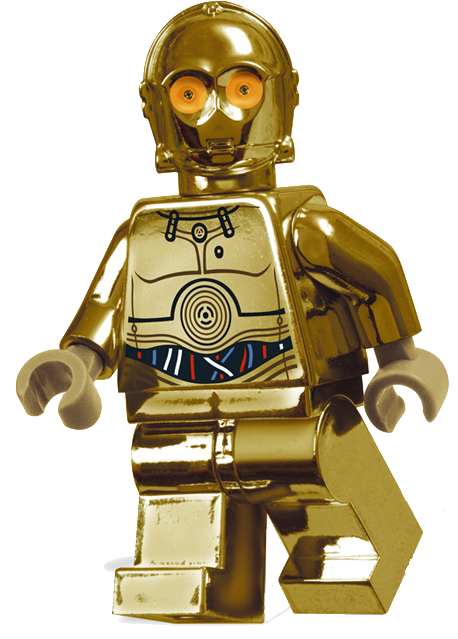

Obi-WanKenobi.png) |
Un legendario Jedi y uno de los personajes más destacados en toda la saga de Star Wars. Obi-Wan es conocido por su sabiduría, habilidades de combate con sable de luz y su profundo sentido del deber. A lo largo de las películas, pasa de ser el aprendiz de Qui-Gon Jinn a convertirse en el mentor de Anakin Skywalker, y finalmente, en el maestro de Luke Skywalker. Es un personaje emblemático cuya presencia y guía tienen un impacto duradero en la historia de Star Wars. |
Yoda.png) |
Un maestro Jedi de una especie misteriosa conocida como los "Yoda", famoso por su sabiduría, poder en la Fuerza y su peculiar forma de hablar. A pesar de su pequeño tamaño y apariencia frágil, Yoda es uno de los Jedi más poderosos que jamás haya existido. Es reconocido por su papel como mentor de varios Jedi, incluidos Obi-Wan Kenobi y Luke Skywalker. Su sabiduría y enseñanzas fundamentales sobre la Fuerza son fundamentales para el desarrollo de la trama en varias películas de Star Wars. |
Stromtrooper.png) |
Soldados de asalto del Imperio Galáctico, conocidos por su distintiva armadura blanca y sus habilidades de combate. Los stormtroopers son leales al Emperador y están entrenados para cumplir órdenes sin cuestionar. Aparecen en todas las películas de Star Wars como los principales soldados del Imperio, aunque algunos personajes, como Finn, muestran que algunos de ellos pueden rebelarse contra su programación y buscar un camino diferente.td> |
R2-D2.png) |
Un astromecánico droide de la serie R2, conocido por su valentía, ingenio y lealtad. R2-D2 es un personaje querido en la saga, famoso por su papel en la lucha contra el Imperio Galáctico y su papel en la restauración de la República. A pesar de no hablar un idioma humano, se comunica a través de pitidos y zumbidos, siendo uno de los personajes más expresivos y entrañables de Star Wars. Es el compañero constante de C-3PO y desempeña un papel crucial en muchas de las aventuras de la saga. |
| C3-PO | Un droide protocolar de la serie 3PO, conocido por su personalidad neurótica y su habilidad para comunicarse en varios idiomas. C-3PO es el contraparte humanoide de R2-D2 y a menudo se encuentra en situaciones cómicas debido a su preocupación excesiva y tendencia a meterse en problemas. A pesar de su naturaleza propensa a la ansiedad, es un personaje valiente que acompaña a los héroes en sus misiones, a menudo a regañadientes. Su conocimiento de protocolo y traducción lingüística lo convierte en un recurso invaluable para la Rebelión y, posteriormente, para la Resistencia. |